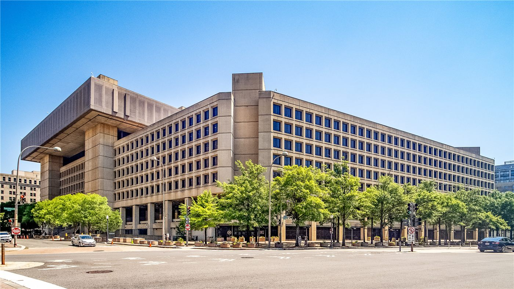

美 FBI, 백악관 인근 행사 겨냥한 폭발물 드론 음모 적발
미국 FBI가 백악관 인근에서 열리는 대형 격투기(UFC) 행사를 겨냥한 폭발물 탑재 드론 공격 음모를 사전에 적발했다고 밝혔다.
정가호 기자 · 2026.06.18
橋국제·안보

외신은 미국 연방수사국(FBI)이 백악관 인근에서 예정된 대형 격투기(UFC) 행사를 겨냥한 폭발물 드론 공격 음모를 적발했다고 전했다. 당국은 관련자를 확인하고 위협을 차단했다고 설명했다.
광고 문의 · 300×250드론을 이용한 위협은 탐지·대응이 까다로워 각국 보안 당국의 새로운 과제로 떠오르고 있다. 대형 행사의 안전 관리에 드론 방어 체계의 중요성이 커진다.
사전 적발은 정보·수사 역량이 작동한 결과로 평가된다. 다만 구체적 혐의와 사실관계는 수사·재판을 통해 확정될 사안이다.
華橋時報는 이를 공공 안전과 대테러 대비 차원에서 사실 위주로 전한다. 대규모 행사의 안전은 국적을 떠나 참가자 모두의 관심사다.
출처·참고 (사실 확인용 — 본문은 직접 재작성)
· Fox News
· 國際외신
· Fox News
· 國際외신